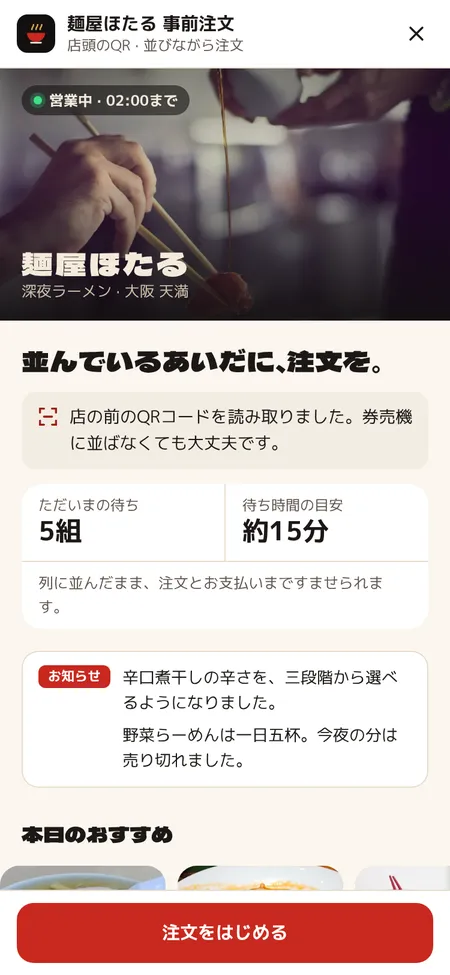
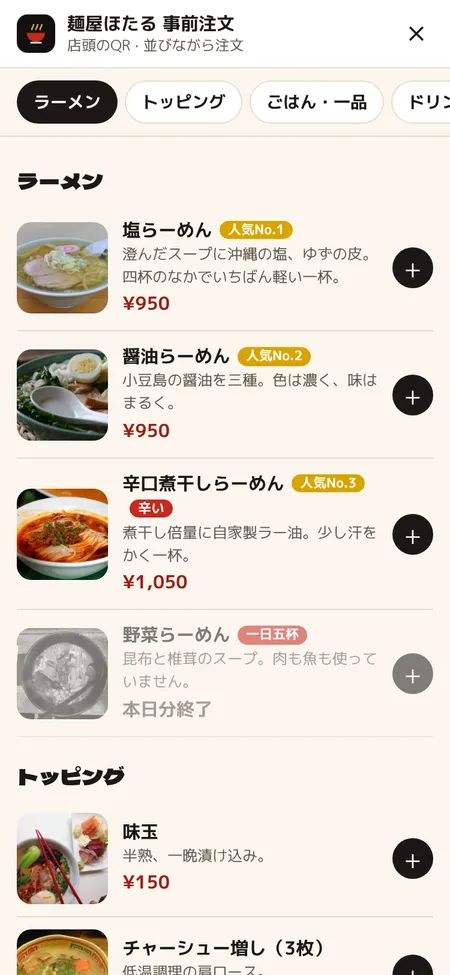
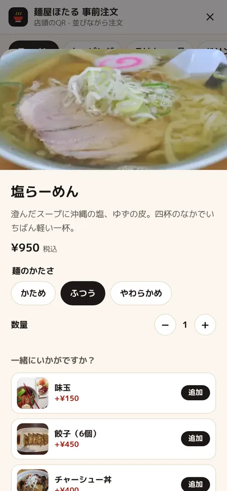
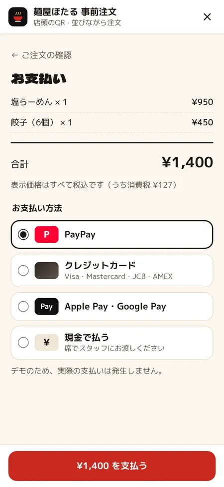
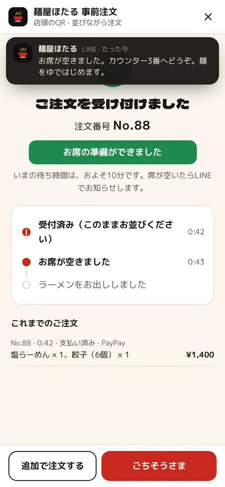
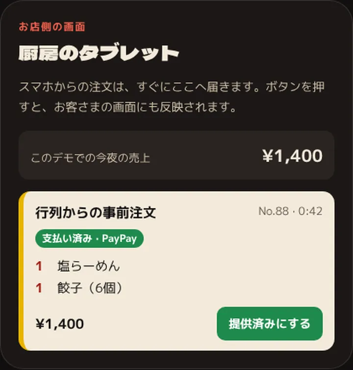

LINEミニアプリ · ラーメン屋
並んでいるあいだに、
注文も支払いも
深夜まで行列ができるラーメン屋「麺屋ほたる」。券売機の代わりに、店の前のQRコードからLINEで注文して先に支払い。席が空いたらLINEで呼ばれ、座ればすぐに一杯が出てきます。
ライブデモ
自動で動いています。画面に触れると、そのまま操作できます。
お客さまの画面
読み取りから支払いまで、5つの画面
すべてLINEの中で完結します。アプリのインストールも、会員登録もいりません。

並びながら開くただいまの待ち組数と、待ち時間の目安がひと目で。
写真付きメニューラーメン、トッピング、ご飯ものまで。人気の順位つき。
麺のかたさを選ぶかため・ふつう・やわらかめ。一緒に味玉や餃子も。
先に支払うPayPay・カード・Apple Pay。現金の方はレジで。
席が空いたらお知らせ注文番号と待ち状況。席の準備ができたらLINEに届く。
お店側の画面
注文は、厨房のタブレットへ
新しいレジやプリンターは不要。厨房にあるタブレットやスマホが、そのまま注文の画面になります。
- 支払いがすんだ注文だけが届く
- 麺のかたさやトッピングも、一枚の伝票に
- 「席へ案内する」を押すと、お客さまに席の準備ができたと届く

課題
十席のカウンターに、夜ごと行列ができるラーメン屋。券売機の前で迷うお客さま、とくに海外からの方のところで列が止まり、店主は麺をゆでながら食券を受け取っていました。並んでいるあいだに注文と支払いをすませ、席に着いたらすぐに一杯を出せるようにしたい。
つくったもの
- 店の前のQRコード。並んだまま、LINEでメニューが開く
- 麺のかたさまで選べる、日本語と英語の写真付きメニュー
- ただいまの待ち組数と、待ち時間の目安をトップに表示
- PayPay・カード・Apple Pay／Google Payで先に支払い。現金はレジでも
- 席が空いたらLINEでお知らせ。座ればすぐに一杯が出てくる
- 一日五杯の限定や品切れも、その場で表示。十杯で一杯無料のスタンプカードつき
設計で決めたこと
- 先に払うのは、ラーメン屋の流儀だから券売機と同じく、支払いがすんでから作りはじめます。席でのお会計はありません。
- 並ぶ時間を、選ぶ時間にメニューを決めるのは列の中で。席では食べることに集中できて、回転も早くなります。
- 英語でも、迷わず頼める写真と英語の説明があれば、指差しも身振りもいりません。
- 呼び出しはLINEで店の前で待たなくても、席が空けばスマホに届きます。
実際の導入に必要なもの
- お店のLINE公式アカウント
- LINEミニアプリのチャネル（LINEヤフーの審査は通常1〜2週間）
- PayPayやカード会社などの決済サービスとの契約（手数料は売上の数％）
- 特定商取引法に基づく表記とプライバシーポリシー（一緒に用意します）
- 厨房用のタブレットかスマホと、QRコード
使った技術
- お客さま側はLINEミニアプリ（LIFF）
- 手書きのHTML・CSS・JavaScript（フレームワーク不使用）
- このデモはブラウザの中だけで動き、実際の注文や決済はしません
- 写真はWikimedia Commons（CCライセンス、クレジット表記）
同じお店のサイト
ほかのLINEミニアプリ
同じ仕組みを、それぞれのお店のやり方に合わせました。
後払い · 少しずつ注文鳥と炭

焼き鳥屋 · 東京・下北沢。串を少しずつ頼んで、最後にスマホでお会計
事例を読む →テイクアウトの事前注文かえでとケトル
珈琲店 · 京都・北白川。受け取り時間を選んで、番号で受け取るテイクアウト
事例を読む →飲み放題 · グラス交換制ともしび
居酒屋 · 東京・新橋。残り時間つきの飲み放題を、席からLINEで
事例を読む →5か国語 · 観光のお客さまにゆうなぎ
居酒屋 · 東京・浅草。英語・中国語・韓国語のメニューと、日本語で届く厨房の伝票
事例を読む →カード保証 · 無断キャンセル対策鮨 澪
寿司店 · 東京・神楽坂。カウンター8席を、カード登録で予約。前日にLINEで来店確認
事例を読む →予約 · 前日のリマインド月と櫛
美容室 · 東京・中目黒。空き時間を見て、メニューと担当を選んで予約
事例を読む →順番受付 · 家で待てるさくら通りクリニック
クリニック · 東京・桜新町。家からLINEで順番を取り、近づいたらお知らせ
事例を読む →会員証 · ポイントとクーポンこむぎ日和
パン屋 · 鎌倉・長谷。ポイント・クーポン・焼き上がりのお知らせ
事例を読む →